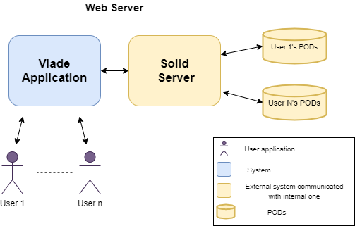
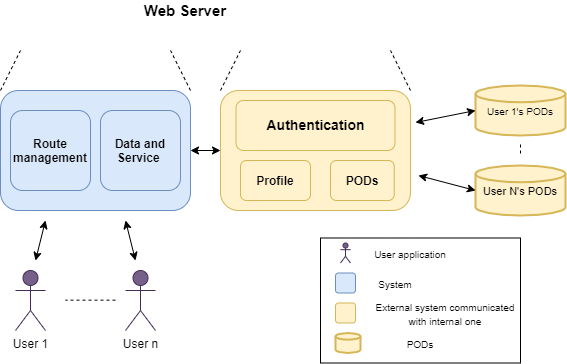
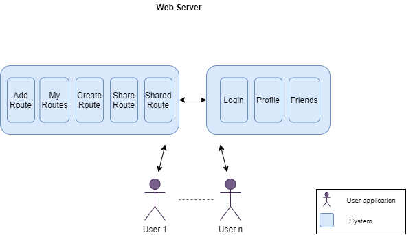
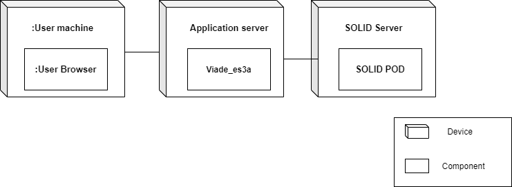

1. Introduction and Goals
1.1. Requirements Overview
| Requirement | Description |
|---|---|
Decentralized architecture |
The application will be separated from the data storage |
Routes |
User can store their routes in their own PODs. |
Map |
User can view their routes, added to the POD, stored on a map. |
Shared files |
Pictures, videos or information about a route can be shared with user friends. |
Notifications |
When some friend of our user shares a route with him, he can get notifications. |
Group of friends |
Users can have groups of friends with whom they may want to share a route. |
Interoperability |
It should be possible to view routes loaded by users that are using a different app. |
1.2. Quality Goals
| Goal | Motivation | Importance |
|---|---|---|
Usability |
One of the most important is that it is esay to use by de user |
High |
Efficiency |
If the user is waiting for a long time for response, the people won’t use it |
High |
Functionality |
The ability to perform a task or function is obviously very important too |
High |
Reliability-Security |
Users need to trust the app and the correct data that they introduce and its decentralization to use it |
Medium-High |
1.3. Stakeholders
| Role | Description and Goals |
|---|---|
Developers |
The members team that develop the app and that they need to pass the ASW subject |
Users |
People who are interested in using the decentraliced app for save their routes and share it with their friends |
The Inrupt Company |
The enterprise that created Solid will value us as if it were a teacher to give a diploma to the winning team members |
Professors |
Our lecture and practical Teachers and also, Coordinator of the Software Architecture. To see their students are able to investigate and develop a new project, so that they can be prepare for the future |
2. Architecture Constraints
Constraint |
Explanation |
Code |
We use React to implement the project |
Language |
Documentation and code is developed in English |
Documentation |
All our documentation is based on the arc42 template |
POD |
Developed by us |
Constraint |
Explanation |
Members of our team |
Carlos Menéndez, Andrés Ángel González, Andrea López, Christian Gabriel, Elena Díaz, Iván Rodríguez, María González |
Project duration |
The time we are given to develop our project are around 4 months |
Participation control |
The team has a git repository with the complete commit history of all the members to take track of the participation |
Minutes |
In the practical classes we write all the progress or modifications done in the project |
Constraint |
Explanation |
Web Application |
We will develop a web application to manage routes and share them with our 'friends' |
Decentralized Architecture |
Instead of relying on a single central server it distributes workloads among several machines |
Maintenance |
Use of multiple tests to preserve the correct performance, usability, security… |
Solid |
The data storage is made using Solid |
Notifications |
The user should receive a notification when a friend shares a route. |
Map view |
The user can see their route´s map on the app. |
3. System Scope and Context
3.1. Context and scope
Viade is a decentralized route management system. Viade allows users to share routes with friends or groups of friends. It also allows you to share photos, videos and other types of files. It will notify the user when a friend wants to share a route with him. Viade will allow to show the routes on a map.
3.2. Business context
Viade is based on the SOLID specification. SOLID (derived from "social linked data") is a proposed set of conventions and tools for building decentralized social applications based on Linked Data principles. It is a decentralized architecture in which data storage is separated from applications. Viade users will store the routes in their own PODs. (PODs are like secure USB sticks for the Web, that you can access from anywhere) Viade will contact Solid POD providers to store the routes and other related information such as photos and videos. Viade will allow to show the routes on a map using Google Maps. Viade will allow to see routes generated with other different applications.
3.3. Technical Context
The application is a a decentralised web based app, the users will store the data in the solid pods for wich they will need internet acces. The idea is for users to be able to share routes through urls without the need of a central database in wich to store the data
4. Solution Strategy
4.1. Decisions
The following list shows some decisions we have made to develop this project.
-
Use of SOLID to save personal user’s routes in the application. User will be able to decide which data wants to store and who has access to it. SOLID’s main advantage is that it will allow us to have a completely descentralized application and fully under user’s controll using PODS.
-
We decided to use JavaScript to develop this program, because it’s easier to use with SOLID and create web applications. Also, we need to use React Native for this subject, a JavaScript library that lets you build web applications or mobile apps.
-
We will use Node.js, an asynchronous event-driven JavaScript runtime what ables to build scalable network applications. It is compatible with SOLID an they explain how to use it to run your server quickly.
-
At the beginning of the project we wanted to use Google Maps API, but later we decided to use Open Street Map with Leaflet, an open source JavaScript library for mobile-friendly interactive maps, because Google Maps allows you to send a specific number of free requests and later you have to pay to keep using the API.
-
For data exchange and storage we decided to used GeoJSON, an open standard format designed for representing simple geographical features that we consider easier to manipulate than other formats like XML.
5. Building Block View
The building block view shows the static decomposition of our system into building blocks, as well as their inner dependencies. We will show different levels and zoom into black boxes to show their components.
It is all based on the scope and context diagram that has been described in the third section of the documentation.
5.1. Level 1
In the first level, we distribute the responsabilities of the system in the main application, which is Viade, and Solid Server.

-
Building block content
| Name | Responsability |
|---|---|
Viade Application |
It allows users to add and store information and media about routes, and share with their friends. |
Solid Server |
It provides users information and their PODs, that store the information. |
5.2. Level 2
In the second level, zooms into the components of each part mention in the previous level.

5.2.1. Viade Application
-
Building block content
| Name | Responsability |
|---|---|
Routes |
It allows users to add and store information and media about routes, and share with their friends. |
Data and Service |
It provides users information and their PODs which store the information. |
5.2.2. Solid Server
-
Building block content
| Name | Responsability |
|---|---|
Authentication |
It manages user register and log in. |
Profile |
It contains Solid user profile. |
PODs |
It manages all information and media about Solid users routes. |
5.3. Level 3
In the third level, zooms into the components of our Viade application, we decided to mark important user features that a user could do and manage as the following ones:

5.3.1. Routes management
| Name | Responsability |
|---|---|
Add Route |
It allows to store a route in the POD. |
My Routes |
It lists routes created by user. |
Create Routes |
It allows you to create a new route and store into your POD. |
Share Routes |
It allows to share user routes with friends. |
Shared Routes |
It allows to see routes that has been shared to you. |
5.3.2. Data and Service management
| Name | Responsability |
|---|---|
Login |
It allows to log in to a Solid Server provider. |
Profile |
It shows user profile status and a link to Solid profile. |
Friends |
It lists user friends. |
6. Runtime View
-
1. When we open our application first we will see a place to introduce the provider or the WebID we want to log in with.
-
2. After pressing the button "Log in" we will see a place to introduce the personal ID and the password. Introduce it and press the button 'OK'.
-
3. Later, our application will ask the server to approve the login request.
-
4. When the server accepts, the users will have access to their routes and friends.
-
1. We click on Add route, which is in the NavBar.
-
2. We add all the stuff we want to upload to the POD (.geoJson file and name is obligatory).
-
3. We click 'Save' to finish the action.
-
1. We click on 'My routes' option, which is in the NavBar menu for Routes.
-
2. We will see a list that contains every route we have added to our POD. We choose one.
-
3. When the petition is processed, we will see the map with our route and a menu where we can see the photos, videos and descrption.
-
4. We have the option to edit (click 'Edit' button) and delete (click 'Delete') the selected route.
-
1. We click on 'Create a route' option, which is in the NavBar menu for Routes.
-
2. We have the same process as in AddRoute, but this time we won´t upload a geojson file. We will create the route by clicking in the map to mark the items of the route.
-
3. We click 'Save' to finish the action.
-
1. We click on 'Share routes', which is in the NavBar.
-
2. We can see our list of routes and friends. If we click on a route, when the petition is processed, we can share it with a friend by clicking on the button 'Share' of the friend we want to share the route with.
-
1. We click on 'Profile', which is in the NavBar.
-
2. We can see our profile, the number of routes and the number of Friends.
-
3.1 We can click on 'Go to SOLID profile' to see the full profile.
-
3.2 We can click on 'Show Friends' to see the whole list of Friends.
-
3.3 We can click on 'Show routes' to see the whole list of Routes.
-
1. We click on 'My friends', which is in the NavBar menu for Friends.
-
2. We can see our Friends
-
1. We click on 'Friend´s routes', which is in the NavBar menu for Friends.
-
2. We can see the routes that had been shared by our friends.
-
1. We click on 'Notifications', which is in the NavBar.
-
2. We can see the notifications that had been sent by our friends when a route is shared.
-
1. If we click on 'Log out', we will log out of the application.
7. Deployment View

| Module | Definition |
|---|---|
Machine/Device |
User device which must have a browser to access the application. User does not need a very powerful computer, just Internet conexion. |
Browser |
A web browser (commonly referred to as a browser) is a software application for accessing information on the Web. For example: Google Chrome, Microsoft Edge Chromium, Mozilla Firefox. |
Aplication server |
Device that provides services to users' devices. An application server generally manages most (or all) of business logic and access to application data. |
Viade_ES3A |
A decentralized routes management system based on the Solid specifications. In later versions of the documentation the component architecture will be detailed. |
SOLID’s server |
Server where the user’s POD and profile is in. |
User’s POD |
All the routes and multimedia data are stored in the POD. |
8. Cross-cutting Concepts
8.1. Content
This section describes overall, principal regulations and solution ideas that are relevant in multiple parts (= cross-cutting) of our system.
An image is included to refer to everything that will be explained.

8.2. Domain model
-
It is a conceptual model of all issues related to a specific problem. In our case, our domain model covers four things:
-
Routes
-
User (save the routes)
-
Leaflet(shows the routes in a map)
-
Friend (receives the route that you send him/her)
-
8.3. User Experience
This is a routes management system and its meant to allow several people to save, see and share their routes easily. User interface must be friendly and accessible so all kind of user profiles can use the application without any impediment or difficulty.
8.4. Safety and security
It’s important to preserve the privacy of the data and the security of the user during the usage and the not usage of Viade.
8.5. Privacy
The most important concept about the project, Privacy. When you use an app that uses SOLID specs and personal PODs where the user save his/her data and, in this way, only this user is the owner of his data and not an enterprise/business that trade with this.
9. Design Decisions
We haven’t taken any major design dicisions other than the following.
As with every Solid app we will have to follow a P2P architecture without the central database, user’s information will be stored in their pods.
| Property | Decision | Explanation |
|---|---|---|
Architecture |
P2P |
All solid apps work with P2P |
Database |
No Database |
The idea of using Solid is to avoid a central database to store data |
Documentation |
Arc42 |
It’s mandatory aswell to use Arc42 |
FrameWork |
React Native |
It is a mandatory rule of this course to use React as the framework |
Runtime enviroment |
Node.js |
We will use Node to launch and build the app |
Maps API |
Open Street Map |
It’s a free map apis that will give us enough to work with |
Testing |
Jest |
A freamework explained in the laboratory lessons focused on Javascript testing |
Load Tests |
Gatling |
We’ll use gatling for the load tests as explaines in the lectures. |
10. Quality Requirements
10.1. Quality Tree
The following diagram represents the quality scenarios which tries to show some of this project´s quality attributes.
10.2. Quality Scenarios
Scenario |
Explanation |
Priority |
Decentralized data |
If the server hosting the app falls, data remains safe |
High/High |
Data Storage |
From the user´s personal computer to a Solid server |
High/High |
Login control |
Each user has access only to its own account and data |
High/High |
Private routes |
Every user’s routes are private so if one user wants to share one route with a friend he has to give permissions |
High/High |
Scenario |
Explanation |
Priority |
Easy to learn |
The users get used easily to the application |
Medium/Medium |
Good-looking interface |
If the app colours are attracting for the user it will be easier and comfortable to use it |
Low/Low |
Accesibility |
Mouse is not te only way to navigate through the app. We can use the keyboard for some function |
Low/Low |
Scenario |
Explanation |
Priority |
Clear and coherent purpose |
Developers can find in the documentation where to work |
Medium/Medium |
Established methology |
Visible in the documentation |
Medium/Medium |
Scenario |
Explanation |
Priority |
Interactions with the UI are shown fast |
Every change or interaction the user makes will appear without making him wait a long time |
Medium/Medium |
Scenario |
Explanation |
Priority |
Multiple tests |
The aplication will be tested to prove its correct performance |
High/High |
Scenario |
Explanation |
Priority |
Support changes |
The application should support modifications without making a big impact on the usability |
Medium/Medium |
Scenario |
Explanation |
Priority |
Multiple platform |
The application should be able to be launched in many different platforms. |
Medium/Medium |
Scenario |
Explanation |
Priority |
Comunication with others |
Everyone’s application shouldn’t have problems to interact between each other |
High/High |
11. Risks and Technical Debts
Risks |
Explanation |
How to solve it |
New documentation technique |
Arc42 is new for all of us so it implies some effort on knowing and learning how to use it. Making a good use of it is a challenge for our team. |
Read the documentation and take as an example the biking2 |
Group communication and cooperation |
Most of us don’t know each other and it is the first time working together. |
All of the members need to put effort on working together, collaborating and iteracting with each other in order to make our project progress properly. Sometimes we will do some meetings to get close to each other and share our opinions about the app . |
Team member gives up the project |
Any member of the group can leave it at any time during the project of development, making the team schedule fall apart. |
Assign each task to two members so in case someone abandons we can be prepared and the amount of work will be equally divided. |
Solid |
It is the first interaction with Solid project for most of our team members. It introduces new concepts and technology that we should manage by ourselves. Moreover, Solid is in continuos change and improvement so developing our application will be harder. We will need some time until we use it correctly and it will imply an additional struggle. |
Read the documentation and practise a lot. |
New programming language |
The team has never used React before, so the whole team needs to learn how to deal with it, which will take time. Getting used to this language is a new challenge we should deal with. The framework will help us but it also adds complexity to the tasks. Spending time on reading documentation or tutorials is required. |
Read the documentation and practise a lot. |
Architecture developing |
Designing and developing an architecture implies an additional effort and time. In order to do this, all the members of the team should interact and share each other ideas to reach an agreement. |
Make a good organization |
COVID-19 |
Due to Coronovirus, we have be in quarantine, so our meeting should be online, which could probably affect the learning of the different techniques used |
We´ll have to focus on what is important, so we can ensure the good behaviour of our app |
12. Glossary
| Term | Definition |
|---|---|
Arc42 |
arc42 is a template for architecture communication and documentation, that tries to anser whatand how should we document about our architecture. |
JavaScript |
JavaScript is a programming language that is mainly used to create dynamic web pages. A dynamic web page is one that incorporates effects such as text that appears and disappears, animations, actions that are activated by pressing buttons and windows with warning messages to the user. For more information visit https://en.wikipedia.org/wiki/JavaScript https://uniwebsidad.com/libros/javascript/capitulo-1 |
JSON |
Open-standard file format or data interchange format that uses human-readable text to transmit data objects consisting of attribute–value pairs and array data types (or any other serializable value). |
Node.js |
Node.js is a runtime enviroment that executes Javascript code outside of a browser. |
POD |
Users stores personal data in "pods" (personal online data stores). PODs are like secure USB sticks for the Web, that you can access from anywhere. For more information visit https://solid.inrupt.com/how-it-works A POD can be obtained on a Solid server at the following link: https://solid.inrupt.com/get-a-solid-pod |
P2P |
Peer-to-peer refers to a network in which the computers are connected to each other via the Internet. |
React |
React (also known as React.js or ReactJS) is a JavaScript library for building user interfaces. For more information visit https://es.reactjs.org/ https://en.wikipedia.org/wiki/React_(web_framework) https://desarrolloweb.com/articulos/que-es-react-motivos-uso.html |
SOLID |
Solid (derived from "social linked data") is a proposed set of conventions and tools for building decentralized Web applications based on Linked Data principles. Solid is modular and extensible. It relies as much as possible on existing W3C standards and protocols. To consult more detailed information you can visit the following links : https://github.com/solid/solid, https://en.wikipedia.org/wiki/Solid_(web_decentralization_project. |
WhiteBox |
Machine or system whose internal structure or processing is known in addition to the knowledge about its inputs, outputs, and the relationship between them. |
Leafleft |
open source JavaScript library for interactive maps. |
About arc42
arc42, the Template for documentation of software and system architecture.
By Dr. Gernot Starke, Dr. Peter Hruschka and contributors.
Template Revision: 7.0 EN (based on asciidoc), January 2017
© We acknowledge that this document uses material from the arc 42 architecture template, http://www.arc42.de. Created by Dr. Peter Hruschka & Dr. Gernot Starke.